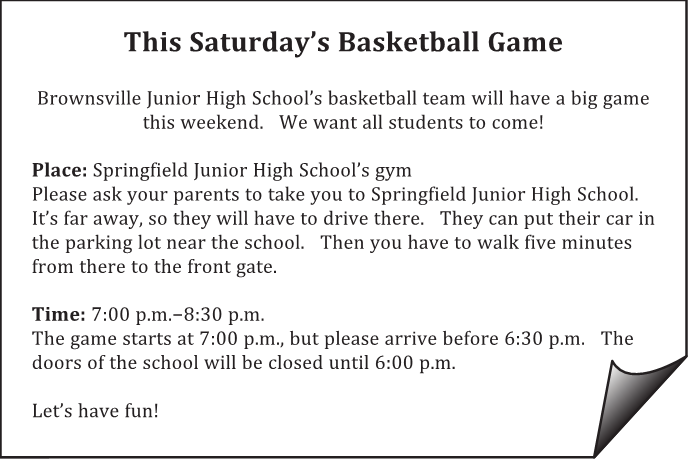
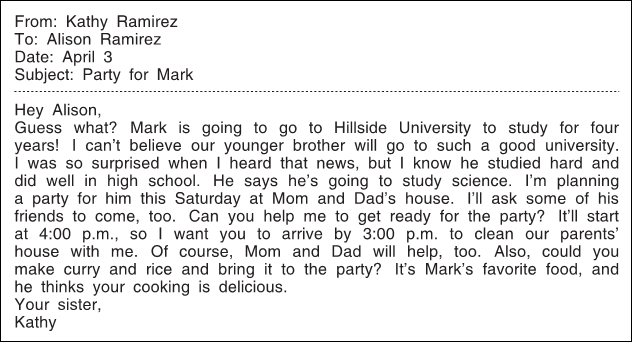
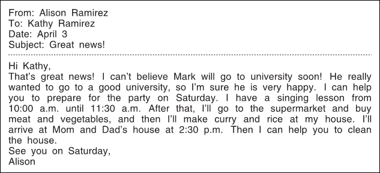
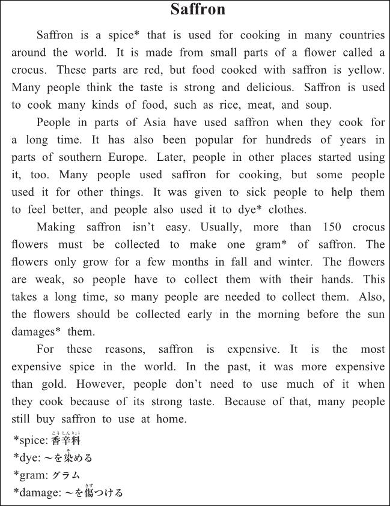

英語検定 ３級(2023年第2回No.3) 残り時間が0になると、自動的に採点します。 時間内に終了する場合は、一番下の「採点する」のボタンを押してください。 残り時間： 分 秒 No 英語検定３級筆記(2023年第2回) 3A 次の掲示の内容に関して、(21)と(22)の質問に対する答えとして 最も適切なもの、または文を完成させるのに最も適切なものを、 解答欄の1～4の中から一つ選びなさい。  No21 If students want to watch the game, they should go 1 or 2 or 3 or 4 1 on foot from the parking lot to the front gate. 2 by car to Brownsville Junior High School’s gym. 3 by bike to Springfield Junior High School. 4 by train to Springfield. 答え： 1 2 3 4 No22 When will the school doors open on Saturday? 1 At 6:00 p.m. 2 At 6:30 p.m. 3 At 7:00 p.m. 4 At 8:30 p.m. 答え： 1 2 3 4 3B 次のEメールの内容に関して、(23)から(25)までの質問に対する答えとして最も適切なもの、 または文を完成させるのに最も適切なものを、解答欄の1～4の中から一つ選びなさい。   No23 Why was Kathy surprised? 1 Her brother didn’t do well in high school. 2 Her brother will go to Hillside University. 3 Her brother said he didn’t like science. 4 Her brother will go to a different high school. 答え： 1 2 3 4 No24 Kathy wants Alison to 1 or 2 or 3 or 4 1 call Mark’s friends. 2 make some food for the party. 3 tell their parents about Kathy’s plan. 4 find a place to have the party. 答え： 1 2 3 4 No25 What will Alison do after her singing lesson? 1 She will eat curry and rice at a restaurant. 2 She will clean her house. 3 She will pick up Mark from school. 4 She will go shopping at the supermarket. 答え： 1 2 3 4 3C 次の英文の内容に関して、(26)から(30)までの質問に対する答えとして最も適切なもの、 または文を完成させるのに最も適切なものを、解答欄の1～4の中から一つ選びなさい。  No26 What is saffron made from? 1 Meat. 2 Rice. 3 Parts of a flower. 4 A yellow vegetable. 答え： 1 2 3 4 No27 What has been popular with people in parts of southern Europe for a long time? 1 Using saffron in their meals. 2 Wearing yellow clothes when they are sick. 3 Washing clothes with saffron. 4 Visiting doctors in Asia. 答え： 1 2 3 4 No28 What do people need to do when they collect crocus flowers? 1 Use their hands. 2 Start when it is hot outside. 3 Use an old machine. 4 Start early in the afternoon. 答え： 1 2 3 4 No29 People don’t use a lot of saffron when they cook because 1 or 2 or 3 or 4 1 it makes most people sick. 2 red isn’t a popular color. 3 it is difficult to buy. 4 it has a strong taste. 答え： 1 2 3 4 No30 What is this story about? 1 A spice that people don’t eat anymore. 2 A new way to grow many kinds of flowers. 3 A popular spice that is used in many dishes. 4 A place that is famous for flowers. 答え： 1 2 3 4




 英語検定 ３級(2023年第2回No.3)
英語検定 ３級(2023年第2回No.3)